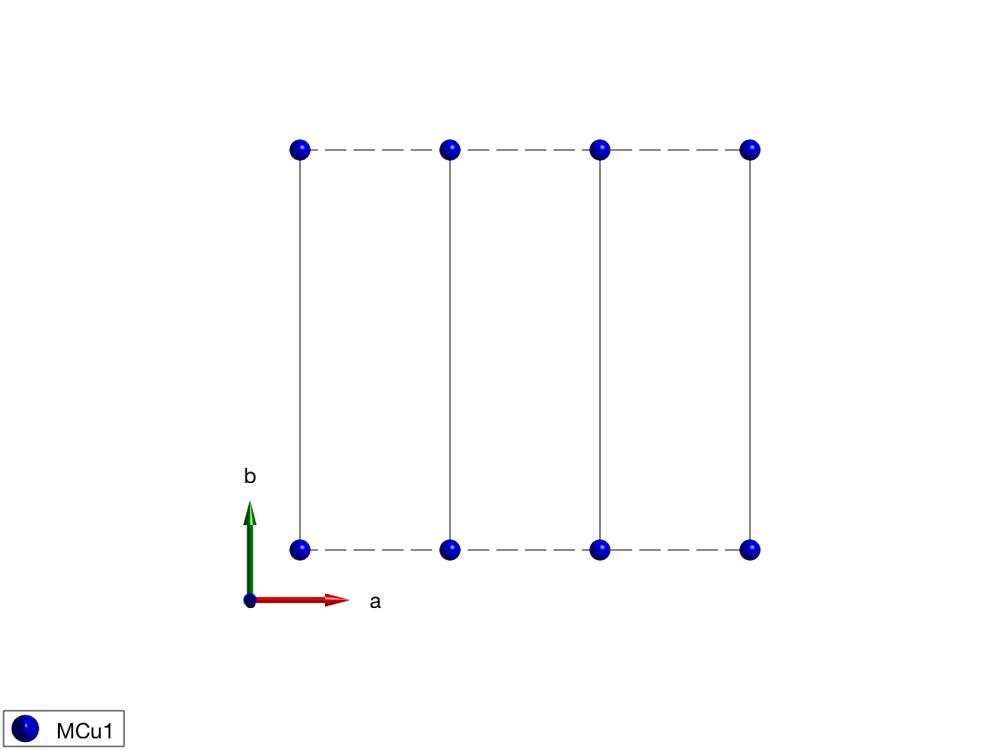
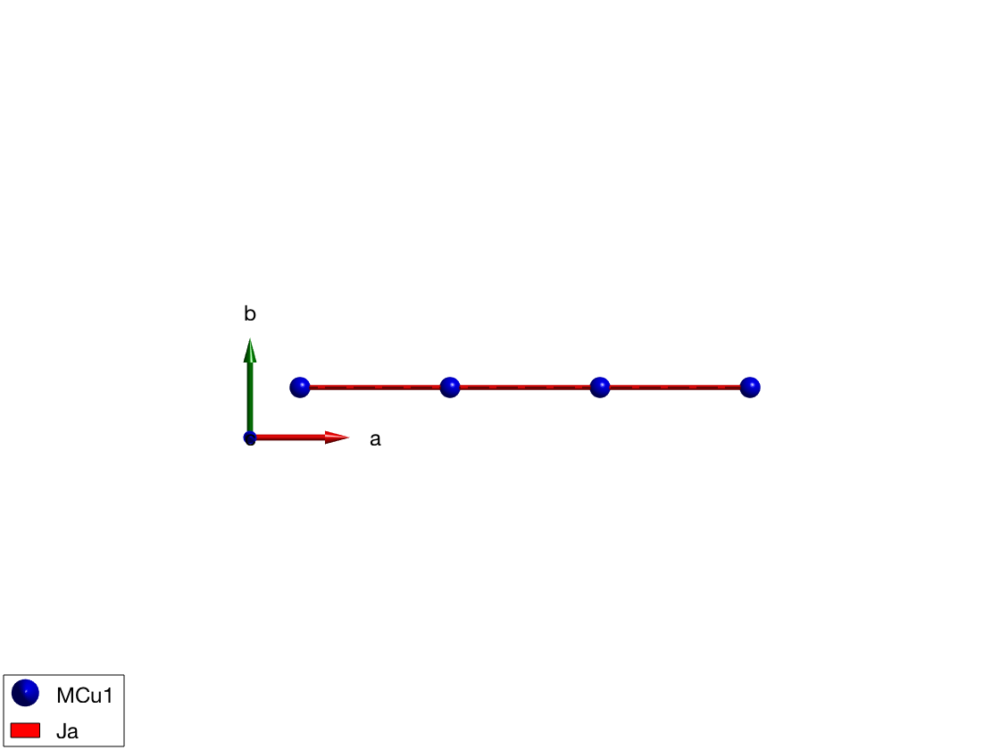
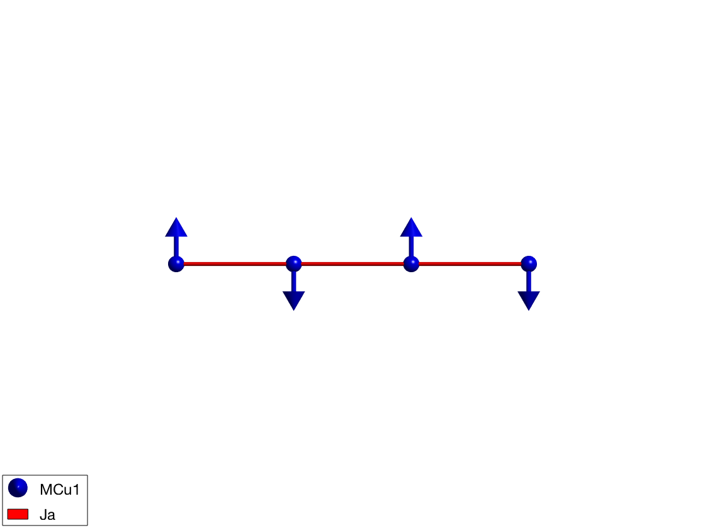
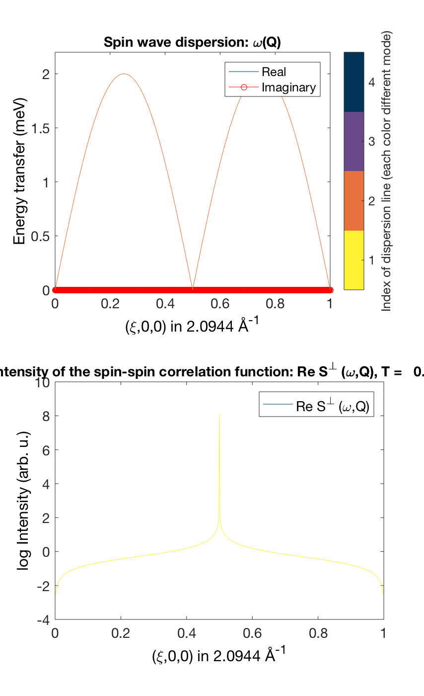
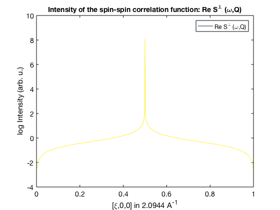

Contents
Antiferromagnetic nearest-enighbor spin chain
Definition of crystal structure, shortest bonds along the a-axis magnetic Cu+ atoms with S=1 spin.
AFMchain = sw; AFMchain.fileid(0) AFMchain.genlattice('lat_const',[3 8 8],'angled',[90 90 90],'sym',0); AFMchain.addatom('r',[0 0 0],'S',1,'label','MCu1','color','blue'); display('Atomic positions as columns:') AFMchain.atom.r plot(AFMchain,'range',[3 1 1],'zoom',0.5)
Atomic positions as columns:
ans =
0
0
0
 Create antiferromagnetic interactions
Ja = 1 meV, positive sign denotes antiferromagnetic interaction.
AFMchain.gencoupling('maxDistance',7) display('Rows: dlx, dly, dlz, at1, at2, idx, ma1, ma2, ma3') AFMchain.couplingtable.table AFMchain.coupling display('Bond vectors (first three rows) and bond distances') AFMchain.couplingtable.bondv AFMchain.addmatrix('label','Ja','value',1,'color','red'); AFMchain.addcoupling('Ja',1); plot(AFMchain,'range',[3 0.9 0.9],'zoom',0.8)
Rows: dlx, dly, dlz, at1, at2, idx, ma1, ma2, ma3
ans =
1 2
0 0
0 0
1 1
1 1
1 2
0 0
0 0
0 0
ans =
dl: [3x2 int32]
atom1: [1 1]
atom2: [1 1]
idx: [1 2]
mat_idx: [3x2 int32]
Bond vectors (first three rows) and bond distances
ans =
1 2
0 0
0 0
3 6
 Two ways of defining the magnetic structure
Define all spins
We define a magnetic supercell 2x1x1 of the crystal cell and define both spin direction in the supercell with the following parameters:
- magnetic ordering wave vector k = (1/2 0 0)
- spins pointing along +/- y direction: S = [[0 1 0]' [0 -1 0]']
- normal to the spin vectors n = (1 0 0)
AFMchain.genmagstr('mode','direct','k',[1/2 0 0],'n',[1 0 0],'S',[0 0; 1 -1;0 0],'nExt',[2 1 1]);
Define only one spin
We define the spin direction in the crystallographic unit cell and let the sw.genmagstr() function generate the other spin based on the magnetic ordering wave vector and normal vectors. This method is usefull for creating complex structures. Both methods gives the same magnetic structure, all stored values in the afchain.mag_str field are the same.
AFMchain.genmagstr('mode','helical','k',[1/2 0 0],'n',[1 0 0],'S',[0; 1; 0],'nExt',[2 1 1]); display('Magnetic structure with spins 1 2 ... as columns, xyz as rows:') AFMchain.mag_str AFMchain.mag_str.S
Ground state energy
display('Ground state energy (meV/spin)') AFMchain.energy plot(AFMchain,'range',[3 0.9 0.9])
Magnetic structure with spins 1 2 ... as columns, xyz as rows:
ans =
N_ext: [2 1 1]
k: [0.5000 0 0]
S: [3x2 double]
n: [1 0 0]
ans =
0 0
1.0000 -1.0000
0 0.0000
Ground state energy (meV/spin)
ans =
-1
 Spin wave spectrum
We calculate the spin wave spectrum and neutron scattering cross sections along the chain direction. The neutron scattering cross section is plotted together with the dispersion (black line).
afcSpec = AFMchain.spinwave({[0 0 0] [1 0 0] 523}, 'hermit',true);
figure
sw_plotspec(afcSpec,'mode',4,'dE',0.2,'axLim',[0 3])
% To calculate the intensity, we need to sum up the intensity of the two
% degenerate spin wave mode using the sw_omegasum() function. We plot the
% logarithm of the intensity.
afcSpec = sw_neutron(afcSpec);
afcSpec = sw_egrid(afcSpec,'Evect',linspace(0,6.5,500),'component','Sperp');
afcSpec = sw_omegasum(afcSpec,'zeroint',1e-6);
figure
sw_plotspec(afcSpec,'mode',2,'log',true,'axLim',[-4 10])
  Written by Bjorn Fak & Sandor Toth 06-June-2014